Week 0 · De basis: spreiding, z-scores en de normaalverdeling
wat je nodig hebt om met TS te beginnen
Tegen de ochtend hing de vleermuis nog steeds naar zijn briefje te kijken — 65 op de piekervragenlijst — en hoe langer hij keek, hoe groter het getal werd.
“Is dat veel?” vroeg hij zacht, want de anderen sliepen.
De zevenslaper deed één oog open.
“Jij kijkt niet, jij piekert, en piekeren is in herhaling vallen,” zei ze, en het oog ging weer dicht.
De vleermuis keek nog een keer naar het briefje, en toen, voor het eerst die nacht, van het briefje af.
De boom hing vol dieren, en ieder van hen had zo’n briefje.
Wat je deze week leert
wat voor getal je hebt: het meetniveau
de standaarddeviatie in zes stappen, met de hand en uit je hoofd, en wat elke stap betekent
waarom een ruwe score niets zegt, en een z-score wél: hoe vaak past het lineaaltje? En terug naar de score
de normaalverdeling: een klok, en oppervlakte is kans
de 68–95–99.7-regel en drie ankers, voor als je geen R hebt
van z naar een kans en terug, met de regel, met de ankers, en precies in R of in tabel A
van kans naar procent en terug, zonder een nulletje kwijt te raken
in R, als controle: sd(), scale(), pnorm() en qnorm()
Waarom een week 0
Statistiek heeft, net als alle wetenschap, geen ander doel dan verschillen voorspellen en verklaren, in de populatie. Waarom scoort de een hoger op de piekervragenlijst dan de ander? Dat zoek je in een verschil ergens anders, bijvoorbeeld in slapen. Weet je van iemand dat hij slecht slaapt, dan gok je zijn piekerscore hoger dan die van een goede slaper: dat is voorspellen. Blijkt dat slechte slapers inderdaad meer piekeren, dan heb je een stuk van de verschillen in piekeren verklaard. Zo heet dat in de statistiek, ook als je niet weet of het slapen de oorzaak is.
Hoe is dat bij jou: pieker je meer na een slechte nacht? Wat je ook antwoordt, je bent al een kleine wetenschapper: je koppelt verschillen in piekeren aan verschillen in slapen. Je wilt het niet alleen weten van jezelf of van de mensen die je gemeten hebt, maar van iedereen over wie je iets wilt zeggen. Die hele groep heet de populatie.
Maar eerst moet je weten hoe groot die verschillen zijn, en of een 65 eigenlijk veel is: daarom draait deze week om spreiding.
Meer dan deze week heb je niet nodig om te beginnen: de standaarddeviatie, de z-score, en de normaalverdeling waarop een z zijn plek krijgt. Weet je het niet meer precies, dan is deze bladzijde er nou net voor.
Dit is het hoofdstuk nul van het boek, en aan het eind van deze week moet je het kunnen dromen. Vooral twee dingen: de standaarddeviatie uitrekenen, gewoon qua volgorde, en een z-score uitrekenen én begrijpen. Wie z begrijpt, heeft de t-waarden en χ² van later al half begrepen.
Daarom staan de stappen op een stappenkaart, steeds in dezelfde woorden. Je leest hem, je schrijft hem uit je hoofd op, en je oefent hem in korte rondjes met nieuwe getallen. Aan het eind staat een zelftoets zonder spiekbriefje. Maak elke vraag eerst zelf en klap het antwoord pas daarna open: op het tentamen klapt er ook niets open.
Op een tentamen heb je geen tabel en geen R. Met de hand werk je met een vuistregel en drie ankers, en een kans die je niet uit je hoofd kunt weten, staat dan in de vraag. Hier oefen je daarnaast twee wegen naar dezelfde precieze kans: met pnorm() in R, en met tabel A achterin. Die twee moeten op hetzelfde uitkomen. Zo controleer je jezelf, en zie je wat R voor je uitrekent.
Meetniveau: wat voor getal heb je?
Voor je iets uitrekent: wat voor getal is het eigenlijk? Aan het meetniveau van een variabele (in het Engels level of measurement) weet je hoe serieus je de waarde mag nemen. Er zijn vier meetniveaus, en bij elk niveau komt er iets bij. Dat ene ding is het toverwoord.
Vier meetniveaus, en wat er bij elk niveau bij komt
meetniveau
toverwoord
wat het getal kan
voorbeeld
nominaal
naampje
alleen verschil: hetzelfde of anders
je hechtingsstijl: veilig, angstig of vermijdend
ordinaal
rangorde
verschil en een volgorde, maar de afstanden zijn niet gelijk
hoe vaak je liegt: nooit, soms, vaak of altijd
interval
afstand
een volgorde en gelijke afstanden
je score op een vragenlijst over faalangst
ratio
nulpunt
gelijke afstanden en een echte nul: nul is echt niets
hoe vaak je deze week goed hoor zei terwijl het niet zo was
Waarom dit ertoe doet: een gemiddelde en een standaarddeviatie hebben pas zin vanaf interval. Geef je de hechtingsstijlen een nummer (1, 2 en 3), dan blijven het naampjes; een gemiddelde hechtingsstijl van 1.8 bestaat niet. Alles in deze week rekent met afstanden: de standaarddeviatie, de z-score en de normaalverdeling.
Bij het kiezen van een toets, in week 7 (Toetskeuze en overzicht), gaan interval en ratio samen. Dan zijn het drie soorten uitkomst, op dezelfde volgorde: een categorie (nominaal), een rangorde (ordinaal) of een getal met vaste afstanden (interval of ratio).
OpmerkingWaar de namen vandaan komen, en een vraag met vijf vakjes
Nominaal komt van het Franse le nom: de naam. Het is maar een naampje. Inter is tussen: bij interval ligt de afstand tussen twee waarden vast. Ratio is verhouding: pas met een echte nul is twee keer zoveel ook echt twee keer zoveel.
Eén vraag met antwoorden van helemaal mee oneens tot helemaal mee eens is strikt genomen ordinaal: de volgorde ligt vast, de afstand niet. Tel je een hele vragenlijst van zulke vragen op, dan behandel je die score als interval, zoals in de tabel hierboven. Ook met één zo’n vraag wordt vaak gerekend, en dat is prima. Maar op het moment dat je er een gemiddelde of een standaarddeviatie van uitrekent, neem je aan dat hij zich gedraagt als interval of hoger.
OpmerkingKort checken — welk meetniveau?
Welk afweermechanisme iemand het vaakst gebruikt: ontkennen, wegredeneren of er een grap van maken.
Vijf mensen op een rij gezet, van minst naar meest jaloers.
Hoe lang iemand erover doet om op een verwijt te reageren, in seconden.
Een score op een vragenlijst over eenzaamheid.
OpgeletAntwoord — welk meetniveau?
Nominaal: drie namen, zonder volgorde.
Ordinaal: een volgorde, maar je weet niet of de stap van nummer 1 naar nummer 2 even groot is als die van nummer 2 naar nummer 3.
Ratio: nul seconden is echt niets, en twee keer zo lang is echt twee keer zo lang.
Interval: een optelsom van veel vragen behandel je als interval, zoals de meeste vragenlijstscores.
De standaarddeviatie in zes stappen
Een gemiddelde zegt waar het midden ligt. Het zegt niet hoe ver de scores eromheen liggen. Daarvoor is er de standaarddeviatie (in het Engels standard deviation). Je hoort ook standaardafwijking: hetzelfde ding, een andere naam.
Op een tentamen krijg je geen honderd scores, maar een stuk of vijf. Soms is de som al half gedaan en moet jij hem afmaken. Dus zorg dat je de stappen kent.
Vijf mensen houden een week lang bij hoe vaak ze goed hoor zeggen als iemand vraagt hoe het gaat, terwijl het eigenlijk niet goed gaat. Hun scores zijn 7, 9, 9, 10 en 15.
Stap 1 · Gemiddelde
Tel alle scores op en deel door n. Het gemiddelde heet (x-streep):
Dat is je beste gok. Komt er straks een van de vijf mensen binnen en moet je raden wat hij scoort, dan roep je 10.
Stap 2 · Blauwe streepjes
Hoe ver zat je naast? Trek van elke score het gemiddelde af: score min gemiddelde. Specifiek min algemeen, altijd in die volgorde; dan klopt de min of de plus vanzelf. Elk verschil is een afwijking (in het Engels deviation), een gokfout. Bij mij in de les zijn het altijd blauwe streepjes.
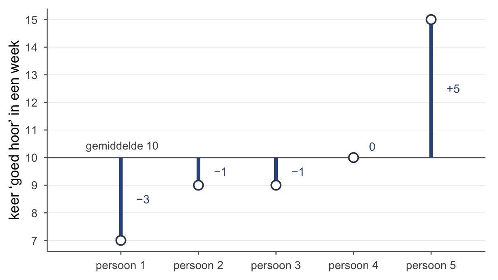
Figuur 1: De blauwe streepjes. Elk streepje loopt van het gemiddelde (10) naar een score: −3, −1, −1 en +5, en bij persoon 4 een 0. Boven het gemiddelde plus, eronder min. Samen 0.
Zo lees je het: het streepje van persoon 5 is het langste (+5): bij hem zat je met je gok van 10 het verst ernaast, vijf boven het gemiddelde. Dat van persoon 1 (−3) wijst omlaag en is korter: hij scoort drie onder het gemiddelde, en daar zat je minder ver naast.
Tel de streepjes op:
Altijd nul. Het gemiddelde ligt precies zo dat de streepjes erboven en eronder elkaar opheffen. Handig als controle: komt er geen nul uit, dan klopt je gemiddelde niet. Maar als maat voor de spreiding is het niks: dan zou je nooit misgokken. Die minnen moeten weg.
Stap 3 · Kwadrateren
Zet elk streepje in het kwadraat. Kwadraat is in het Engels square, en een square is een vierkant. Een streepje in het kwadraat is dus letterlijk een vierkantje: het streepje is de zijde, het kwadraat de oppervlakte. En min keer min is plus, dus de minnen zijn weg.
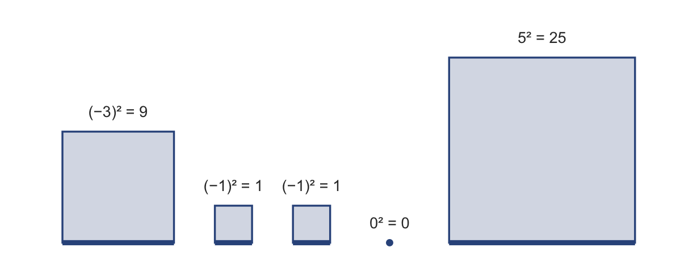
Figuur 2: Elk blauw streepje wordt een vierkantje. Het streepje van −3 wordt een vierkantje van 9; het streepje van 0 wordt een vierkantje van 0: het telt mee, maar je ziet het niet. Al het blauw samen is 36: dat tel je op in stap 4.
Zo lees je het: het streepje van +5 is vijf keer zo lang als dat van −1, maar zijn vierkantje is 25 keer zo groot (25 tegen 1). In het kwadraat telt een lang streepje dus veel zwaarder mee dan een kort.
WaarschuwingDe rekenmachine-val
Tik je −3² in, dan geeft je rekenmachine −9: hij kwadrateert eerst en zet de min er daarna weer voor. Je bedoelt . Zet er haakjes om.
Stap 4 · Optellen
Tel de vierkantjes op:
Dat is de kwadratensom (in het Engels sum of squares): al het blauw van de vierkantjes hierboven, alle gokfouten samen. Hoe verder de scores uit elkaar liggen, hoe groter hij wordt.
Let op het verschil met stap 2: de streepjes tellen altijd op tot 0, de vierkantjes alleen als iedereen precies op het gemiddelde zit. Daarom eerst kwadrateren, dán optellen.
Stap 5 · Delen door n − 1
Deel de kwadratensom door n − 1, hier 5 − 1 = 4:
Dat is de variantie (in het Engels variance), : het gemiddelde vierkantje. De kleine x zegt waarvan dit de spreiding is: van de scores x.
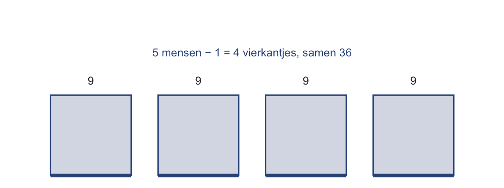
Figuur 3: Hetzelfde blauw als bij stap 3 (36), eerlijk verdeeld over 5 − 1 = 4 gelijke vierkantjes: elk 9. Dat is de variantie, het gemiddelde vierkantje. Vier, omdat er vijf mensen zijn en de laatste vastzit; niet omdat je bij stap 3 vier vierkantjes zag (dat van 0 telt ook mee). Op dezelfde schaal als de vierkantjes van stap 3.
Zo lees je het: elk vierkantje is 9: kleiner dan het grootste van stap 3 (25) en groter dan het kleinste dat je daar zag (1). Al het blauw, ook dat van het grote vierkant, is eerlijk verdeeld: de variantie zegt hoe groot een vierkantje gemiddeld is, niet hoe groot het grootste was.
Onthoud vooral: n − 1.
Waarom door 4 en niet door 5? Omdat het gemiddelde al vastligt. Komen de vijf om de beurt binnenwandelen, dan kun je bij de laatste even rekenen en weet je precies wat hij scoort: hij heeft geen keus meer, hij zit vast. Probeer het: het gemiddelde is 10, dus samen scoren ze . Ken je de eerste vier (7, 9, 9 en 10, samen 35), dan moet de laatste zijn.
Alle vijf streepjes tel je mee, maar alleen vier ervan konden vrij bewegen: je hebt eigenlijk geen vijf gokfouten, maar vier. Daarom deel je door vier. Bij stap 1 lag nog niets vast; daar deel je gewoon door vijf. Dat getal, n − 1, heet het aantal vrijheidsgraden (in het Engels degrees of freedom). In rondje 7 doe je het zelf.
Stap 6 · Wortel
De variantie is in vierkantjes: geen gewone scores meer, maar vierkante scores, en daar kan niemand zich iets bij voorstellen. De wortel brengt je terug naar gewone streepjes:
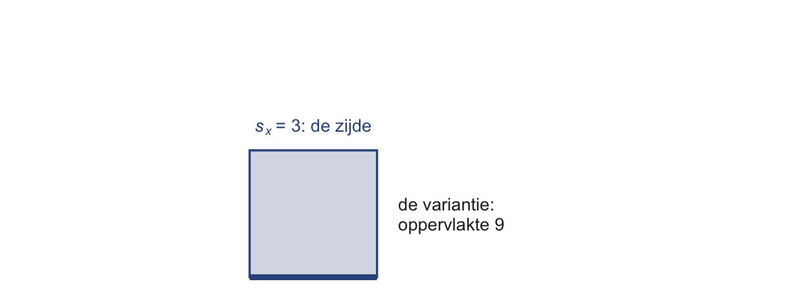
Figuur 4: Eén gemiddeld vierkantje van stap 5: de variantie (9) is een oppervlakte. De wortel geeft de zijde: de standaarddeviatie, 3. De dikke onderkant is weer een streepje, en straks het lineaaltje.
Zo lees je het: de onderkant is 3 lang: de standaarddeviatie, in gewone scores. De 9 is de oppervlakte erboven, in vierkante scores. Lees je die 9 als afstand, dan zeg je dat de scores gemiddeld 9 naast het gemiddelde zitten: drie keer te ver.
Dat is de standaarddeviatie, . En dan altijd een interpretatie: de scores zitten gemiddeld zo’n 3 naast het gemiddelde, links of rechts. Zie als zoiets als de gemiddelde gokfout: de gemiddelde lengte van een blauw streepje.
OpmerkingWaarom niet gewoon de lengtes?
Zoiets als de gemiddelde gokfout, niet precies. Het lekkere (maar foute) gevoel zegt: haal de min weg, tel de lengtes op en deel door het aantal, een gewoon gemiddelde dus. Dan krijg je hier , en geen 3. Dat is ook een maat voor spreiding, alleen een andere dan de standaarddeviatie. Hij is niet handig, want met kwadraten loopt alles wat hierna komt lekker door. Dus wij pakken de standaarddeviatie.
Dat de standaarddeviatie hier groter is, komt vooral door het grote vierkant van 25: in het kwadraat telt het lange streepje veel zwaarder mee. Een stukje komt ook van het delen door n − 1 in plaats van door n.
De zin de scores zitten gemiddeld zo’n 3 naast het gemiddelde mag je gewoon blijven zeggen: zo zegt iedereen het, en zo’n zegt al dat het niet precies is.
Alles op een rij
Met de hand zet je het in een tabel, met alle tussenantwoorden erin. Je kunt het ook in één keer doortikken, maar dat zou ik nooit doen: met een tabel kun je tussendoor terugrekenen en checken. Elke kolom is een stap, en de onderste rij is stap 4:
Stap 2, 3 en 4 voor het voorbeeld, in één tabel
score
stap 2: min 10
stap 3: in het kwadraat
7
−3
9
9
−1
1
9
−1
1
10
0
0
15
+5
25
samen 0
stap 4: 36
Daaronder de laatste twee stappen: en .
Als formule:
Lees hem van binnen naar buiten: is stap 2, het kwadraat stap 3, (optellen) stap 4, de breuk stap 5, de wortel stap 6. De formule ís de stappenkaart.
OpmerkingControle in R — klopt je sx?
var() en sd() delen ook door n − 1.
goed_hoor <-c(7, 9, 9, 10, 15)# voluit: elk argument bij zijn naammean(x = goed_hoor, trim =0, na.rm =FALSE)
[1] 10
var(x = goed_hoor, na.rm =FALSE)
[1] 9
sd(x = goed_hoor, na.rm =FALSE)
[1] 3
# dit zijn de standaardinstellingen; laat je ze weg, dan kiest R dezemean(goed_hoor) # stap 1
[1] 10
var(goed_hoor) # stap 1 tot en met 5
[1] 9
sd(goed_hoor) # alle zes
[1] 3
Dezelfde 9 en 3 als met de hand, voluit en kort. trim = 0 betekent: niets van de randen afsnijden, elke score telt mee. na.rm = FALSE: ontbreekt er een score (in R heet zo’n gat NA), dan geeft R NA terug in plaats van stil om het gat heen te rekenen.
De stappenkaart
Onthoud het als een verhaaltje: de mensen komen een voor een binnen, jij gokt het gemiddelde, en elke gokfout is een blauw streepje dat een vierkantje wordt. Kun je dat verhaaltje vertellen, dan heb je de formule niet meer nodig.
Op de kaart staat bij elke stap wat je doet, en wat het betekent. Allebei leer je uit je hoofd: een stap die je kunt doen maar niet snapt, ben je zo weer kwijt.
OpmerkingDe stappenkaart
stap
wat je doet
wat het betekent
1 · Gemiddelde
Tel alle scores op en deel door n.
je beste gok
2 · Blauwe streepjes
Trek van elke score het gemiddelde af: score min gemiddelde.
een gokfout: zoveel zat je ernaast
3 · Kwadrateren
Zet elk streepje in het kwadraat.
een vierkantje: de min is weg
4 · Optellen
Tel de vierkantjes op: de kwadratensom.
alle gokfouten samen: alle spreiding
5 · Delen door n − 1
Deel de kwadratensom door n − 1: de variantie, .
het gemiddelde vierkantje (n − 1: de laatste zit vast)
6 · Wortel
Neem de wortel uit de variantie: de standaarddeviatie, .
zoiets als de gemiddelde gokfout: weer een streepje
OpmerkingUit je hoofd — de zes stappen naar sx
Klap de stappenkaart hierboven dicht (klik op de titel). Pak een kladblaadje en schrijf de zes stappen op, en bij elke stap in een paar woorden wat hij betekent. Klap daarna pas het nakijken open.
OpgeletKijk na — de zes stappen naar sx
stap
wat je doet
wat het betekent
1 · Gemiddelde
Tel alle scores op en deel door n.
je beste gok
2 · Blauwe streepjes
Trek van elke score het gemiddelde af: score min gemiddelde.
een gokfout: zoveel zat je ernaast
3 · Kwadrateren
Zet elk streepje in het kwadraat.
een vierkantje: de min is weg
4 · Optellen
Tel de vierkantjes op: de kwadratensom.
alle gokfouten samen: alle spreiding
5 · Delen door n − 1
Deel de kwadratensom door n − 1: de variantie, .
het gemiddelde vierkantje (n − 1: de laatste zit vast)
6 · Wortel
Neem de wortel uit de variantie: de standaarddeviatie, .
zoiets als de gemiddelde gokfout: weer een streepje
Mist er een stap, of wist je bij een stap niet wat hij betekent? Schrijf de kaart nog één keer over, en doe dan rondje 1.
OpmerkingRondje 1 — met hulp
Vier mensen tellen een dag lang hoe vaak ze een appje herschrijven voordat ze het durven te versturen. Hun scores zijn 2, 5, 8 en 9.
Bereken de variantie.
Bereken de standaarddeviatie . Komt de wortel niet mooi uit, rond dan af op twee decimalen.
Kan een variantie ooit negatief zijn? Waarom wel of niet?
De hulp: vul de tabel in.
Vul de tabel in
score
stap 2: score min gemiddelde
stap 3: in het kwadraat
2
5
8
9
samen
stap 4: samen
OpgeletKort antwoord rondje 1
De variantie is 10.
De standaarddeviatie is .
Nee. Een vierkantje heeft nooit een negatieve oppervlakte.
OpgeletVolledige uitwerking rondje 1 — stap voor stap
En c: in stap 3 wordt elk streepje een vierkantje, en een oppervlakte is nooit negatief. Een streepje van min iets geeft na het kwadrateren plus iets. Optellen en delen door een positief getal maakt er ook niets negatiefs van. Dus de variantie is 0 of meer, en 0 alleen als iedereen precies op het gemiddelde zit.
OpmerkingRondje 2 — de tabel teken je zelf
Vijf mensen vullen een korte vragenlijst over ontkenning in, met zinnen als zo erg is het niet en ik heb er geen last van. Hun scores zijn 2, 4, 6, 6 en 7.
Bereken . Teken de tabel zelf.
OpgeletKort antwoord rondje 2
De standaarddeviatie is 2 (de variantie is 4).
OpgeletVolledige uitwerking rondje 2 — stap voor stap
Persoon 5 uit het voorbeeld scoort 15. Is dat veel?
Je hebt geen idee. 15 wát? Als je niet weet waar het midden ligt, en niet hoe ver de scores uit elkaar liggen, zegt 15 helemaal niks. Ruw is ruk: een ruwe score, los van zijn groep, is een getal zonder betekenis. In vaktaal heet een ruwe score een ongestandaardiseerde score (in het Engels raw score).
Maar het midden en de spreiding heb je net uitgerekend: gemiddelde 10, standaarddeviatie 3. Nu kun je er iets mee.
Het lineaaltje
Een z-score (de z van één score, ; kort schrijf je gewoon z) is een telling: het aantal standaarddeviaties tussen een score en het gemiddelde, met een min ervoor als de score onder het gemiddelde ligt. Meer is het niet.
Zie de standaarddeviatie als een lineaaltje, hier van 3 lang. De z-score is de vraag: hoe vaak past dat lineaaltje tussen het gemiddelde en deze score?
Figuur 5: Het lineaaltje is 3 lang (de standaarddeviatie), met een streepje per punt. Naar links, tot de score 7, past het precies één keer: z = −1. Naar rechts, tot 15, past het één keer helemaal, en dan nog ongeveer 0.67 van een lineaaltje, het afgebroken stuk: samen z ≈ 1.67.
Zo lees je het: vanaf het gemiddelde, 10, past het lineaaltje van 3 naar links precies één keer, tot 7: z = −1. Naar rechts past het één keer helemaal, tot 13, en dan nog ongeveer 0.67 erbij, tot 15: z ≈ 1.67. Rechts heb je dus meer lineaaltjes nodig: 15 ligt verder van het gemiddelde dan 7, en valt in deze groep meer op.
Voor persoon 5:
Ruim anderhalf lineaaltje boven het gemiddelde. En persoon 1, met 7:
Precies één lineaaltje eronder. De min zegt: onder het gemiddelde. Vergeet hem nooit.
Een score in lineaaltjes heet in vaktaal een gestandaardiseerde score (standardized score), de tegenhanger van de ruwe. Dat is een naam, geen uitleg: gestandaardiseerd klinkt als een definitie, maar zegt niets. Een belastingformulier is ook gestandaardiseerd.
En terug. Van z naar de score is fietsen: begin bij huis (het gemiddelde), en leg het lineaaltje z keer neer.
Een z van 2 is twee lineaaltjes boven het midden: 16. Een formule omvormen hoeft nooit: je loopt gewoon vanaf het midden.
OpmerkingControle in R — scale() is de z-stap
scale() doet de z-stap voor iedereen tegelijk.
# z voor alle vijf mensen tegelijkscale(x = goed_hoor, center =TRUE, scale =TRUE)
Bovenaan staan de 5 z-scores, onder elkaar. Daaronder laat R zien waarmee hij rekende: scaled:center is het gemiddelde (10) en scaled:scale de standaarddeviatie (3). Precies jouw stap 1 en stap 6.
Dat doen de twee instellingen: center = TRUE trekt het gemiddelde eraf, scale = TRUE deelt door de standaarddeviatie. Dit zijn de standaardinstellingen; laat je ze weg, dan kiest R deze: scale(goed_hoor) geeft precies hetzelfde. Met scale = FALSE houd je alleen de blauwe streepjes over.
De hele kaart
Dit is de stappenkaart, nu met de stap naar z erbij. Dit is wat je uit je hoofd kent: wat je doet, en wat het betekent.
OpmerkingDe stappenkaart, met z
stap
wat je doet
wat het betekent
1 · Gemiddelde
Tel alle scores op en deel door n.
je beste gok
2 · Blauwe streepjes
Trek van elke score het gemiddelde af: score min gemiddelde.
een gokfout: zoveel zat je ernaast
3 · Kwadrateren
Zet elk streepje in het kwadraat.
een vierkantje: de min is weg
4 · Optellen
Tel de vierkantjes op: de kwadratensom.
alle gokfouten samen: alle spreiding
5 · Delen door n − 1
Deel de kwadratensom door n − 1: de variantie, .
het gemiddelde vierkantje (n − 1: de laatste zit vast)
6 · Wortel
Neem de wortel uit de variantie: de standaarddeviatie, .
zoiets als de gemiddelde gokfout: weer een streepje
En dan z
Score min gemiddelde, gedeeld door .
hoe vaak het lineaaltje past; een min als je onder het gemiddelde zit
OpmerkingRondje 3 — uit je hoofd: sx en z
Klap de kaart hierboven dicht en schrijf hem op, zonder te kijken. Dan pas rekenen.
Vijf mensen scoren op een vragenlijst over verlatingsangst: hoe bang ben je dat iemand van wie je houdt je in de steek laat? De score loopt van 0 tot 20. Hun scores zijn 6, 10, 10, 12 en 17.
Bereken .
Wat is de z-score van iemand met 17?
En van iemand met 6?
Zeg in woorden wat de z-score van b betekent.
OpgeletKort antwoord rondje 3
= 4
z = 1.50
z = −1.25
De score 17 ligt anderhalf lineaaltje boven het gemiddelde.
OpgeletVolledige uitwerking rondje 3 — stap voor stap
En dan z. en . De eerste ligt anderhalf lineaaltje boven het gemiddelde, de tweede ruim één lineaaltje eronder: dat is d, in woorden.
De klok: oppervlakte is kans
Tot nu toe zette je een score af tegen een handvol mensen: je eigen steekproef, met en . Vaak ken je de hele groep al. Op een piekervragenlijst bijvoorbeeld zijn de scores in de algemene bevolking normaal verdeeld, met gemiddelde = 50 en standaarddeviatie = 10. (In week 1 kom je dezelfde vragenlijst weer tegen.) Griekse letters voor de populatie, Latijnse voor je steekproef; de z-som blijft precies dezelfde.
De normaalverdeling is een gladde, symmetrische klok. Welke klok je hebt, hangt af van twee getallen:
het gemiddelde zegt waar het midden ligt;
de standaarddeviatie zegt hoe breed de klok is.
TipDe σ en de μ van wát?
Die kleine x zegt waarvan dit de spreiding is: van de scores x. Veel boeken en docenten laten hem weg en schrijven alleen σ. Wij niet, want dan is het de σ van wát? Straks komt er een tweede σ bij, die van steekproefgemiddelden, en dan wil je meteen zien welke het is. Zie je bij een docent, in een ander boek of in een tentamenvraag een kale σ, dan is het deze: .
Met het gemiddelde net zo: is het gemiddelde van de scores x. Staat er ergens een kale μ, ook in een tentamenvraag, dan is het deze: .
Bij je eigen steekproef deed je het al: daar schreef je , geen kale s. Dezelfde kleine x, om dezelfde reden.
Figuur 6: Drie normaalverdelingen. Links de piekervragenlijst ( = 50, = 10). Daarnaast dezelfde breedte met een ander midden ( = 70), en rechts hetzelfde midden met = 5. In die twee staat de piekervragenlijst gestippeld erachter. Onder elke klok is de oppervlakte 1, dus de klok die twee keer zo smal is, is twee keer zo hoog.
Zo lees je het: de eerste twee klokken zijn even breed ( = 10) en dus even hoog; alleen het midden schuift, van 50 naar 70. Rechts is = 5: de klok is twee keer zo smal, en zijn top staat twee keer zo hoog als die van de gestippelde klok erachter. Er moet evenveel oppervlakte onder, 1, dus wat smaller wordt, wordt hoger.
Aan zo’n klok lees je geen aantallen af maar oppervlakte. De hele oppervlakte tussen de as en de klok is 1, bij elke klok. Daarom is de smalle klok hoger: er moet evenveel onder.
Op de as staat de gebeurtenis: een score. Erboven, tussen de as en de klok, staat de kans: het stuk oppervlakte boven dat deel van de as. Dat is de kans dat een willekeurig gekozen persoon daar scoort.
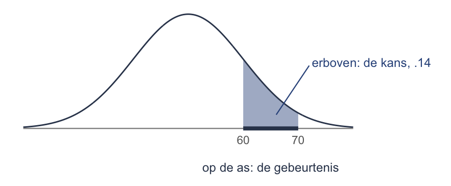
Figuur 7: Op de as de gebeurtenis: een piekerscore tussen 60 en 70. Erboven de kans: het blauwe stuk oppervlakte boven dat deel van de as, p = .14.
Zo lees je het: het blauwe stuk boven 60 tot 70 is .14 van de klok; de rest, links en rechts ervan samen, is .86. Van de 100 mensen scoren er dus ongeveer 14 tussen 60 en 70, en 86 ergens anders.
Kort opgeschreven: . Je leest het als: “x is normaal verdeeld met gemiddelde en standaarddeviatie ”. De piekervragenlijst is : de linker van de drie klokjes hierboven.
Let op: soms krijg je niet de standaarddeviatie maar de variantie , het kwadraat ervan. Neem dan eerst de wortel, net als in stap 6. Variantie 100 betekent .
TipPrecies één score heeft kans nul
Een punt op de as is oneindig dun, en boven iets oneindig duns ligt geen oppervlakte. Bij een gladde klok maakt het dus niet uit of je “hoger dan 65” vraagt of “65 of hoger”: dat is dezelfde kans.
In week 1 tel je stippen in plaats van oppervlakte, en daar telt de grens wél mee. Dat is geen tegenspraak: een stip is een echt ding, een punt op een gladde as niet.
De 68–95–99.7-regel
Elke normaalverdeling heeft dezelfde vorm. Meet je af in standaarddeviaties vanaf het midden, dan ligt er dus altijd evenveel oppervlakte op dezelfde plek:
binnen één standaarddeviatie van het midden ligt ongeveer .68;
binnen twee standaarddeviaties ongeveer .95;
binnen drie standaarddeviaties ongeveer .997.
Van de 100 mensen scoren er dus ongeveer 68 tussen 40 en 60 op de piekervragenlijst, en ongeveer 95 tussen 30 en 70.
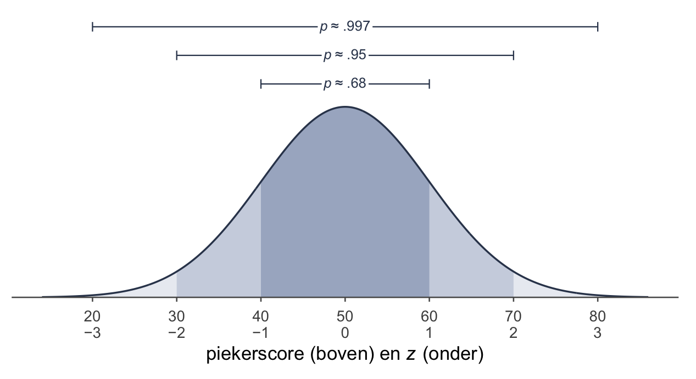
Figuur 8: De 68–95–99.7-regel bij de piekervragenlijst ( = 50, = 10). Binnen één standaarddeviatie van het midden ligt ongeveer .68 van de oppervlakte, binnen twee ongeveer .95, binnen drie ongeveer .997.
Zo lees je het: de donkerste band, van 40 tot 60, draagt ongeveer .68 van de oppervlakte. Maak je hem twee keer zo breed, van 30 tot 70, dan komt er maar .27 bij, tot .95. De meeste mensen zitten dicht bij het midden: hoe verder je naar buiten gaat, hoe minder er nog bij komt.
Waarom niet 1? Omdat de staarten oneindig ver doorlopen. Ze worden alleen heel dun.
Uit de regel volgen de staarten. Wat niet binnen de grenzen ligt, ligt erbuiten, de helft links en de helft rechts:
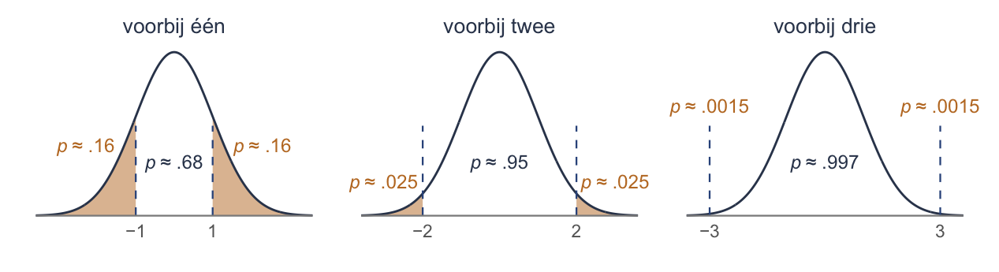
Figuur 9: De staarten uit de regel. Voorbij één standaarddeviatie van het midden ligt aan elke kant ongeveer .16, voorbij twee ongeveer .025, voorbij drie ongeveer .0015. In het midden staat wat de regel binnen de grenzen legt; het midden en de twee staarten samen zijn 1. Voorbij drie is de staart te dun om te zien, maar hij is er nog.
Zo lees je het: links ligt voorbij één aan elke kant ongeveer .16, in het midden voorbij twee nog maar ongeveer .025: één standaarddeviatie verder, en de staart is ruim zes keer zo klein. Van 1000 mensen zitten er ongeveer 160 meer dan één standaarddeviatie boven het midden, en ongeveer 25 meer dan twee.
Rechts van één standaarddeviatie boven het midden ligt dus ongeveer .16, rechts van twee ongeveer .025, rechts van drie ongeveer .0015. Hoe verder weg, hoe kleiner de staart. Op een intelligentietest geldt dus: Einstein heeft de kleinste staart, omdat hij het verst weg zit.
OpmerkingControle in R — klopt de regel?
De regel is afgerond. R rekent de oppervlakte precies uit; hoe pnorm() werkt, staat verderop deze week.
# binnen één, twee en drie standaarddeviaties van het middenpnorm(1) -pnorm(-1)
[1] 0.6826895
pnorm(2) -pnorm(-2)
[1] 0.9544997
pnorm(3) -pnorm(-3)
[1] 0.9973002
Afgerond .683, .954 en .997. De regel zegt .68, .95 en .997: dichtbij genoeg om mee te werken.
OpmerkingRondje 4 — uit je hoofd, met de regel
Eerst de kaart, uit je hoofd. Dan rekenen.
Zes mensen schrijven een week lang op hoe vaak ze zich ergeren aan iets bij een ander dat ze eigenlijk zelf ook doen. Hun scores zijn 7, 10, 13, 14, 16 en 18.
Bereken .
Bereken voor elk van de zes de z-score.
Hoeveel van de zes liggen binnen één lineaaltje van het gemiddelde? En hoeveel zou je volgens de 68–95–99.7-regel verwachten?
OpgeletKort antwoord rondje 4
= 4
Op volgorde van de scores: −1.50, −0.75, 0.00, 0.25, 0.75 en 1.25.
Er liggen er 4 binnen één lineaaltje. Volgens de regel ongeveer : zo’n vier.
OpgeletVolledige uitwerking rondje 4 — stap voor stap
Rondje 4: elk streepje gedeeld door het lineaaltje
score
blauw streepje
z: het streepje gedeeld door 4
7
−6
−1.50
10
−3
−0.75
13
0
0.00
14
+1
0.25
16
+3
0.75
18
+5
1.25
Binnen één lineaaltje betekent: een z tussen −1 en 1. Dat zijn er 4. De regel zegt dat ongeveer .68 binnen één lineaaltje ligt, en van 6 mensen is dat , zo’n vier. Dat klopt hier mooi, maar bij zo weinig mensen is dat ook een beetje geluk: de regel geldt voor een hele, normaal verdeelde groep.
Dezelfde z, tegen de hele groep
Bij een hele groep is het lineaaltje , en meet je vanaf :
Dezelfde som als bij je vijf mensen, alleen met Griekse letters. Iemand scoort 65 op de piekervragenlijst:
Anderhalf lineaaltje boven het midden. Dat zegt al meer dan 65.
En terug is weer fietsen vanaf het midden:
Lees als anderhalf keer een lineaaltje van 10.
Je komt z ook tegen als z-waarde. Bij het toetsen heet hij meestal zo. Dan doe je dezelfde soort deling, maar meet je niet hoe ver één persoon van het midden ligt: je meet hoe ver het gemiddelde van een steekproef ervan ligt.
TipStandaardiseren maakt niets normaal
Zet je een hele groep scores om in z-scores, met het gemiddelde en de standaarddeviatie van díé groep (zoals scale() doet), dan is het gemiddelde van die z-scores altijd 0 en hun standaarddeviatie altijd 1. Maar de vorm blijft. Was de verdeling scheef, dan is hij dat na het omrekenen nog steeds. De klok en alles hieronder werken alleen als de scores zelf (ongeveer) normaal verdeeld zijn.
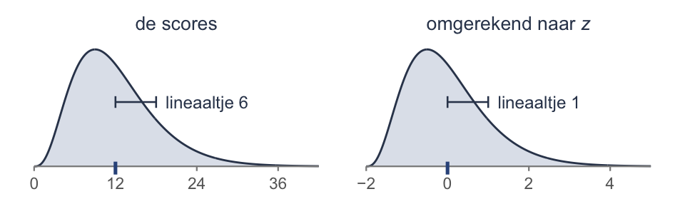
Figuur 10: Links scores die scheef verdeeld zijn, met gemiddelde 12 (het blauwe streepje) en standaarddeviatie 6. Het gemiddelde staat niet onder de top: de lange staart rechts trekt het mee. Rechts dezelfde scores als z: het gemiddelde is 0 geworden en het lineaaltje 1, maar de vorm is precies dezelfde. Nog steeds scheef.
Zo lees je het: links ligt de top bij 9 en het gemiddelde bij 12; rechts de top bij −0.50 en het gemiddelde bij 0. In allebei ligt de top een half lineaaltje links van het gemiddelde. Omrekenen naar z verandert de getallen onder de as, niet de vorm.
Van z naar een kans
Ook z-scores zijn eigenlijk nog ruk. Pas een kans zegt echt iets: “maar ongeveer 7 van de 100 mensen piekeren meer dan ik” begrijpt iedereen.
Regel 1: eerst tekenen
Voor je één getal uitrekent: schets een klok, zet het midden erin, zet je score op de as, en arceer het stuk dat je zoekt. Mooi hoeft niet; de richting moet kloppen.
Figuur 11: Zo mag je schets eruitzien: een klok, het midden bij 50, je score 65 op de as, en het stuk rechts ervan gearceerd. Bibberig is goed, als de richting klopt. De kans schrijf je er pas bij als je hem hebt; hier staat hij al (p = .067), zodat je ziet waar hij hoort.
Zo lees je het: de lijn bij 65 staat rechts van het midden, dus het gearceerde stuk is de kleine kant: veel kleiner dan het witte stuk links ervan. De kans die je zoekt moet dus ver onder .5 liggen, en dat doet de .067 die er al staat. Komt er hier iets boven .5 uit, dan heb je de verkeerde kant gearceerd of uitgerekend.
Twee soorten stukken:
een tweedeling: één grens, een stuk links en een stuk rechts. Die hoort bij lager dan of hoger dan, en je kijkt naar één staart;
een driedeling: twee grenzen, even ver van het midden. Die hoort bij minstens zo ver van het midden, aan welke kant ook, en je kijkt naar twee staarten samen.
Toets je later op zo’n klok, dan heet een kans uit één staart eenzijdig en een kans uit twee staarten samen tweezijdig (in het Engels one-tailed en two-tailed).
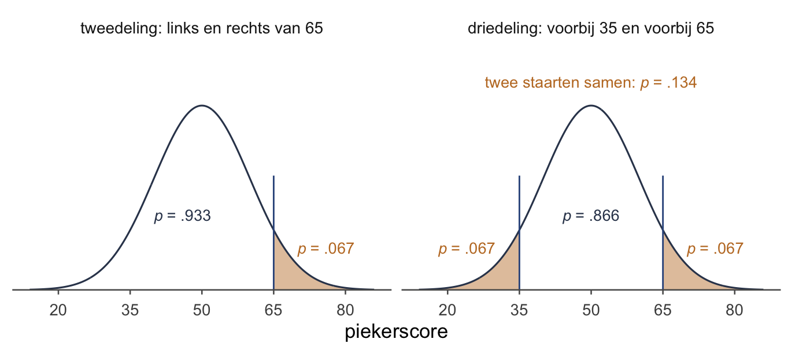
Figuur 12: Links de tweedeling bij 65: .933 ligt links, .067 rechts; één staart. Rechts de driedeling: twee staarten van elk .067, samen .134, en een midden van .866. Elke p is de kans op dat stuk.
Zo lees je het: links is alleen het stuk rechts van 65 oranje: .067, de kans op een score hoger dan 65. Rechts is ook het stuk links van 35 oranje, even groot, en samen is dat .134: twee keer zoveel. Vraag je naar minstens zo ver van het midden, aan welke kant ook, dan tellen beide staarten mee.
Met de hand: de regel geeft een gebied
ligt tussen één en twee lineaaltjes. Rechts van ligt ongeveer .16, rechts van ongeveer .025. De staart rechts van 1.50 zit daar dus tussenin: kleiner dan .16, groter dan .025.
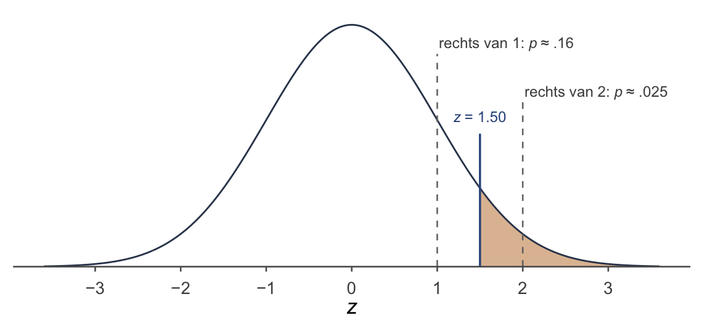
Figuur 13: Met de regel, uit je hoofd: rechts van z = 1 ligt ongeveer .16, rechts van z = 2 ongeveer .025. De oranje staart rechts van z = 1.50 zit daar tussenin.
Zo lees je het: alles wat oranje is, ligt ook rechts van de lijn bij 1, dus de oranje staart is kleiner dan .16. En alles rechts van de lijn bij 2 is ook oranje, dus hij is groter dan .025. Zonder te rekenen weet je al: tussen .025 en .16.
Precies is dat niet, maar vaak is het genoeg: bij een meerkeuzevraag valt er meestal maar één optie in dat gebied.
Met tabel A: de klok in cijfers
Achterin staat tabel A. Daarin staat bij elke z met twee decimalen de oppervlakte links ervan: de klok, maar dan in cijfers.
Zoek z = 1.50 op: rij 1.5, kolom .00. Daar staat .9332. Zoveel van de klok ligt links van z = 1.50.
Rechts is de rest: 1 − .9332 = .0668.
Inderdaad tussen .025 en .16, zoals de regel zei. En pnorm() geeft zo meteen precies hetzelfde.
Precies: pnorm()
pnorm() geeft de oppervlakte links van een z. De eerste keer voluit, met elke instelling bij naam:
# links van z = 1.5, voluit: elk argument bij zijn naampnorm(q =1.5, mean =0, sd =1, lower.tail =TRUE)
[1] 0.9331928
q is de plek op de as: je z. De andere drie zijn de standaardinstellingen; laat je ze weg, dan kiest R deze. mean = 0 en sd = 1 maken er de klok van z van, en lower.tail = TRUE betekent: de onderste staart, links. R zet er 0.9331928 voor op je scherm, afgerond .933. Wil je rechts, dan zet je lower.tail = FALSE: de onderste niet, je wilt de bovenste.
Figuur 14: Welke staart pnorm() geeft, met de hand geschetst bij z = 1.50. Links de standaard, lower.tail = TRUE: de oppervlakte links. Rechts lower.tail = FALSE: de oppervlakte rechts.
Zo lees je het: in de linker klok is alles links van 1.50 gearceerd, bijna de hele klok: .933. Dat krijg je als je niets over de staart zegt. In de rechter alleen het smalle stuk rechts van 1.50: .067. Zoek je het smalle stuk van je schets en geeft R iets boven .5, dan heb je de verkeerde kant: kijk of lower.tail = FALSE erbij staat.
Kort, zoals je het meestal tikt:
# links van z = 1.5: de grote kant van de tweedelingpnorm(1.5)
[1] 0.9331928
# rechts ervan: de kleine kantpnorm(1.5, lower.tail =FALSE)
[1] 0.0668072
Links .933, rechts .067. Die twee tellen op tot 1, want samen zijn ze de hele klok. Inderdaad tussen .025 en .16: ongeveer 7 van de 100 mensen piekeren meer dan 65.
Zonder mean en sd rekent pnorm() dus in de klok van z zelf: gemiddelde 0, standaarddeviatie 1. Die klok heet de standaardnormaalverdeling, . Hoe je R in de schaal van je eigen vragenlijst laat rekenen, staat in In R: kansen uit de klok.
De driedeling. Hoeveel mensen scoren minstens zo ver van 50 als 65, aan welke kant ook? Even ver aan de andere kant is 35, bij z = −1.50. De klok is symmetrisch, dus de staart links van 35 is precies even groot als die rechts van 65. Twee staarten samen, dus één staart maal twee:
# twee staarten: de rechterstaart, maal twee2*pnorm(1.5, lower.tail =FALSE)
[1] 0.1336144
# of de linkerstaart van -1.5, maal twee: hetzelfde2*pnorm(-1.5)
[1] 0.1336144
Dat maal twee mag hier, omdat een gladde klok aan beide kanten precies even groot is. Een stippenplot, zoals in week 1, lijkt op zo’n klok, maar is nooit precies symmetrisch; daar tel je beide kanten echt.
De drie ankers
Drie waarden van z kom je steeds weer tegen. Na een paar weken ken je ze vanzelf:
De drie ankers van de normaalverdeling
z
rechts ervan (één staart)
buiten ±z (twee staarten samen)
tussen −z en z
1.645
.05
.10
.90
1.96
.025
.05
.95
2.576
.005
.01
.99
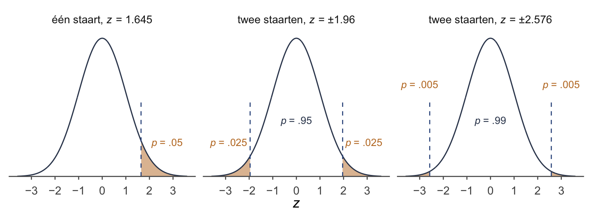
Figuur 15: De drie ankers. Rechts van 1.645 ligt .05 (één staart). Voorbij ±1.96 ligt aan elke kant .025, samen .05. Voorbij ±2.576 aan elke kant .005, samen .01.
Zo lees je het: links en in het midden is evenveel oranje, .05 samen. Links zit het in één staart, en die begint bij 1.645. In het midden is het over twee staarten verdeeld, .025 elk, en dan moet je verder naar buiten, tot 1.96. Rechts is er nog minder oranje, .005 per staart, en die begint pas bij 2.576.
1.96 is de heilige z-waarde. Volgens de vuistregel ligt .95 binnen twee lineaaltjes; preciezer is het binnen 1.96. Bij 1.96 ligt er .025 in elke staart, samen .05.
1.645 is de andere heilige z-waarde, en die wordt vaak met de eerste verward. Bij 1.645 ligt er .05 in één staart. Teken het, dan zie je het.
Bij het toetsen heten de ankers kritieke z-waarden (in het Engels critical values).
Redeneren met de ankers. Elke z kun je tussen de ankers leggen. Kijk wel eerst naar je tekening: één staart of twee?
Eén staart. Onze ligt onder 1.645, dus rechts ervan ligt méér dan .05. Klopt: pnorm() geeft afgerond .067.
Twee staarten samen. Een z van 2.40 ligt tussen 1.96 en 2.576. Verder dan 1.96, dus samen minder dan .05. Niet zo ver als 2.576, dus samen meer dan .01.
Je hebt geen exact getal, maar wel genoeg om te beslissen.
OpmerkingRondje 5 — uit je hoofd: van variantie naar anker
Op een vragenlijst over zelfacceptatie (hoe mild ben je voor jezelf als iets mislukt?) zijn de scores in de bevolking normaal verdeeld. Het gemiddelde is 30 en de variantie is 25. Iemand scoort 38.
Wat is de z-score van die persoon?
Hoort hij bij de hoogste .05? Gebruik alleen een anker.
Controleer b met pnorm().
OpgeletKort antwoord rondje 5
z = 1.60
Nee, net niet.
Rechts van 1.60 ligt .055: iets meer dan .05.
OpgeletVolledige uitwerking rondje 5 — stap voor stap
De vraag geeft de variantie, niet de standaarddeviatie. Het lineaaltje is de wortel, net als in stap 6: . Dan
Wie door 25 deelt in plaats van door 5, krijgt 0.32: veel te klein.
De hoogste .05 begint bij het eerste anker, 1.645. 1.60 ligt daar net onder, dus rechts ervan ligt nét iets meer dan .05. Deze persoon hoort er net niet bij.
In R geeft pnorm(1.6, lower.tail = FALSE) de oppervlakte rechts: .055.
Kans en procent
Een kans is een deel van het geheel, en loopt van 0 tot 1. Hoor je proportie, dan is dat hetzelfde. Een procent is hetzelfde deel, maar dan per honderd. Hetzelfde getal in een ander jasje:
van kans naar procent: keer 100. Van .025 maak je zo 2.5%.
van procent naar kans: gedeeld door 100. Van 5% maak je zo .05.
Je deed het eigenlijk al. Rechts van 65 ligt .067, en hierboven stond dat als “ongeveer 7 van de 100 mensen”: dat is 6.7%, afgerond.
Twijfel je welke kant op? Vraag je af of het getal groter of kleiner moet worden. Het procent is altijd het grote getal van de twee: 0.15% tegen .0015.
Rekenen doe je in kansen, zoals deze hele week. Procenten zijn gezellig om te vertellen, en je komt ze tegen in artikelen en tentamenvragen. Staat er een procent, deel dan eerst door 100, en reken dan pas.
WaarschuwingTel de nulletjes
Kleine getallen zijn rotgetalletjes. Eén nul te veel of te weinig, en je kans is tien keer te klein of te groot: .005 is niet .05. Sla je de nulletjes helemaal over, dan wordt .0015 zomaar 15%, terwijl het 0.15% is.
Tel daarom de nulletjes tussen de punt en het eerste cijfer dat geen nul is. In .05 staat er één, in .005 twee.
Een 0 vóór de punt telt niet mee. R zet hem er altijd voor; dit boek zet hem alleen bij een procent: .0015 als kans, 0.15% als procent.
Neem z = 2.40 van hierboven, en de twee staarten samen:
# z = 2.40: de twee staarten samen2*pnorm(2.4, lower.tail =FALSE)
[1] 0.01639507
Eén nulletje, dus .016. Leg hem naast .05 en .01, die er ook één hebben: onder .05, niet onder .01. Precies wat de ankers zeiden.
Eén nul te weinig, .16, en er ligt ineens méér dan .05.
Eén nul te veel, .0016, en er ligt ineens minder dan .01.
Twee andere conclusies, allebei door één nul.
Tik het in, en lees met een vergrootglas. Ook als je weet hoe het moet: laat het rekenwerk aan je rekenmachine of aan R, en gebruik je hoofd om te controleren. Is het procent het grote getal? In R hoef je zelfs niets over te nemen:
# rechts van z = 1.5: R rekent de kans uit, * 100 maakt er een procent vanpnorm(1.5, lower.tail =FALSE) *100
[1] 6.68072
Afgerond 6.7%: de .067 van hierboven, per honderd. Moet je een klein getal toch van een scherm aflezen, zoom dan in (Ctrl of Cmd en +) en zet je vinger erbij. Zeg desnoods hardop wat er na de punt staat. Bij 0.0668072 is dat nul, zes, zes, acht: één nulletje, dus .067.
Terug: van een kans naar een score
Nu andersom. Wat gegeven is, bepaalt de richting. Krijg je een score en zoek je een kans, dan ga je score → z → kans. Krijg je een kans en zoek je een score, dan ga je kans → z → score.
Boven welke piekerscore zitten de 5 van de 100 hoogste piekeraars?
Teken. Eén staart rechts, van .05: een tweedeling.
Zoek de z. Rechts van 1.645 ligt .05: het eerste anker.
Fiets terug. .
Wie hoger scoort dan 66.45, hoort bij die 5 van de 100.
qnorm() doet hetzelfde in één keer: je geeft een oppervlakte links, R geeft de z (of de score) die erbij hoort.
# welke z heeft .95 links van zich (en dus .05 rechts)?qnorm(p =0.95, mean =0, sd =1, lower.tail =TRUE)
[1] 1.644854
# dit zijn de standaardinstellingen; laat je ze weg, dan kiest R dezeqnorm(0.95)
[1] 1.644854
# en meteen als piekerscoreqnorm(0.95, mean =50, sd =10)
[1] 66.44854
Voluit staan er dezelfde standaardinstellingen als bij pnorm(). Hier betekent lower.tail = TRUE dat de .95 die je geeft de oppervlakte links is. R zet er 1.644854 voor op je scherm: afgerond het eerste anker, 1.645.
Zo komen de ankers ook uit R: qnorm(0.975) geeft afgerond 1.96, en qnorm(0.995) geeft afgerond 2.576.
In R: kansen uit de klok
Twee functies, en ze zijn elkaars omgekeerde:
pnorm() krijgt een plek op de as en geeft een oppervlakte (links, tenzij lower.tail = FALSE);
qnorm() krijgt een oppervlakte (links) en geeft een plek op de as.
Geef je ze alleen een z of een oppervlakte, dan rekenen ze in de klok van z. Geef je mean en sd mee, dan rekenen ze in de schaal zelf, en hoef je z niet eerst uit te rekenen:
# hoger dan 65 op de piekervragenlijst: in één keerpnorm(65, mean =50, sd =10, lower.tail =FALSE)
[1] 0.0668072
Hetzelfde getal als via . Een veelgemaakte fout is beide tegelijk doen: pnorm(1.5, mean = 50, sd = 10). Dan vraag je R naar een piekerscore van 1.5, en krijg je een getal vlak bij 0. R zet het op je scherm als 6.173074e-07. Die e-07 betekent: de punt zeven plekken naar links. Uitgeschreven is het 0.0000006173074: zes nulletjes tussen de punt en de 6, en de 6 zelf op de zevende plek. Voor iemand die anderhalf lineaaltje boven het midden zit, is dat verdacht klein: een teken dat je R iets anders vroeg dan je bedoelde.
Een hele kolom tegelijk. De oefendataset slaapstudie gaat het hele boek mee: 30 slechte slapers, met onder meer hun piekerscore vóór een slaaptraining (piekeren_voor). Download slaapstudie.RData en zet het in je projectmap. (Nog geen project? In RStudio: File > New Project…, dan New Directory > New Project. De map die je daar kiest, is je projectmap.) Daarna:
## Inladen ----load("slaapstudie.RData")
Zo zet je die hele kolom om in z-scores ten opzichte van de algemene bevolking. Twee tekens die je daarvoor nodig hebt:
slaapstudie$piekeren_voor pakt één kolom uit de tabel, bij zijn naam;
<- bewaart wat rechts staat onder de naam links, hier als nieuwe kolom z_voor.
# z per persoon: (score - 50) / 10slaapstudie$z_voor <- (slaapstudie$piekeren_voor -50) /10# de eerste zes rijen, met de nieuwe kolomhead(slaapstudie)
id groep leeftijd piekeren_voor piekeren_na z_voor
1 1 training 19 54 51 0.4
2 2 controle 24 49 45 -0.1
3 3 training 19 48 47 -0.2
4 4 training 26 54 55 0.4
5 5 controle 34 61 58 1.1
6 6 controle 21 54 56 0.4
Reken de eerste rij na: . In opgave 0.6 ga je met die kolom verder.
Een rondje voor morgen. De rondjes op deze bladzijde hebben vaste getallen. Wil je morgen nog een rondje, met getallen die je nog niet kent, laat R ze dan geven. sample(1:20, size = 5, replace = FALSE) trekt vijf verschillende hele getallen tussen 1 en 20, elke keer andere:
# vijf nieuwe scores met een heel gemiddelde, elke keer andererepeat { x <-sample(1:20, size =5, replace =FALSE); if (sum(x) %%5==0) break }x# eerst met de hand; pas daarna:mean(x)sd(x)
Reken eerst met de hand, en kijk pas daarna. Die regel repeat trekt opnieuw tot het gemiddelde een heel getal is, zodat de streepjes heel blijven. Wil je het zoals op een tentamen, met decimalen, laat hem dan weg en schrijf alleen x <- sample(1:20, size = 5, replace = FALSE). Rond binnen één som niet af: tik de breuk onder de wortel in zijn geheel in.
replace = FALSE is de standaardinstelling; laat je hem weg, dan kiest R deze. Hij zegt: elk getal hooguit één keer, dus nooit twee dezelfde scores. Wil je dat wel kunnen krijgen, zoals de twee keer 9 in het voorbeeld, zet dan replace = TRUE.
Op naar week 1
Tot nu toe zet je één score af tegen een groep, en het lineaaltje is de standaarddeviatie . Hier was het gemiddelde van de algemene bevolking, en dat was bekend: 50.
In week 1 draait het om. De populatie is dan alle slechte slapers, en hún ken je niet: dat is juist de vraag. En één stip is daar geen persoon meer, maar het gemiddelde van een hele steekproef. Zulke gemiddelden liggen veel dichter bij het midden dan losse scores: het lineaaltje wordt korter. Dat kortere lineaaltje heet de standaardfout.
De wandeling blijft precies dezelfde: score, z, kans, en terug. In week 1 tel je die gemiddelden als stippen. Hoeveel korter het lineaaltje is, en waarom de stippen een klok vormen, werk je uit in week 2 (Hypothesetoetsen voor één gemiddelde).
Oefenen
Eerst rondjes zonder hulp, dan de opgaven.
OpmerkingRondje 6 — evenveel minder, of twee keer zoveel
Dezelfde vijf mensen houden het nog een week bij, in een rustige week. Hun scores zijn nu 4, 6, 6, 7 en 12.
Kijk eerst alleen naar de scores, en vergelijk ze met die uit het voorbeeld (7, 9, 9, 10 en 15). Wat verwacht je voor het gemiddelde? En voor ?
Reken het uit.
En als ze in de eerste week allemaal precies twee keer zo vaak goed hoor hadden gezegd (14, 18, 18, 20 en 30)? Wat gebeurt er dan met het gemiddelde, met , en met de z van persoon 5?
OpgeletKort antwoord rondje 6
Iedereen scoort precies 3 lager. Het gemiddelde schuift mee omlaag; blijft gelijk.
Het gemiddelde is 7 en = 3, net als in het voorbeeld.
Het gemiddelde en worden twee keer zo groot (20 en 6); de z blijft gelijk.
OpgeletVolledige uitwerking rondje 6 — stap voor stap
De blauwe streepjes zijn precies dezelfde als in het voorbeeld. Als iedereen evenveel verschuift, verandert alleen wáár de scores liggen, niet hoe ver ze van elkaar af liggen. Het gemiddelde schuift mee; de standaarddeviatie niet.
En c: twee keer zoveel is iets anders dan evenveel erbij. Het gemiddelde wordt 20, en elk streepje wordt twee keer zo lang. Een vierkantje wordt dan vier keer zo groot (twee keer zo breed en twee keer zo hoog), en de variantie dus ook: van 9 naar 36. De wortel maakt er weer twee keer van: gaat van 3 naar 6. Het lineaaltje groeit dus net zo hard mee als de streepjes. En z telt hoe vaak het lineaaltje past, en een twee keer zo lang streepje gedeeld door een twee keer zo lang lineaaltje geeft hetzelfde. Persoon 5 had z ≈ 1.67, en met 30 heeft hij dat nog steeds: .
OpmerkingRondje 7 — de laatste zit vast
Vier mensen houden een dag lang bij hoeveel leugentjes om bestwil ze vertellen. Gemiddeld is het 5. Van drie van de vier weet je het: 3, 9 en 4.
Hoeveel leugentjes vertelde de vierde?
Wat heeft dat te maken met delen door n − 1?
Bereken .
OpgeletKort antwoord rondje 7
De vierde vertelde er 4.
Van de vier konden er maar drie vrij bewegen; de laatste zit vast.
≈ 2.71
OpgeletVolledige uitwerking rondje 7 — stap voor stap
Gemiddeld 5 bij vier mensen: samen . De eerste drie samen 16, dus de vierde: .
Zodra het gemiddelde vastligt, heeft de laatste geen keus meer. Van de vier gokfouten zijn er maar drie vrij. Daarom deel je in stap 5 door 4 − 1 = 3.
De zes stappen, met het gemiddelde dat je al hebt:
Stap 1 · Gemiddelde. Het gemiddelde is 5 (gegeven).
Stap 6 · Wortel. . Onder de wortel staat de breuk, niet het afgeronde getal 7.33: binnen één som rond je niet af. Een antwoord dat je opschrijft, zoals ≈ 2.71, mag je daarna afgerond gebruiken.
OpmerkingRondje 8 — zoals op een tentamen: een gemiddelde met decimalen
Vijf mensen tellen een week lang hoe vaak ze iets wilden zeggen, en het toch inslikten. Hun scores zijn 6, 4, 8, 9 en 10.
Bereken . Het gemiddelde is geen heel getal; de stappen blijven dezelfde.
Wat is de z-score van iemand met 4?
Zeg in één zin wat hier betekent.
OpgeletKort antwoord rondje 8
≈ 2.41
z ≈ −1.41
De scores zitten gemiddeld zo’n 2.41 naast het gemiddelde van 7.40, links of rechts.
OpgeletVolledige uitwerking rondje 8 — stap voor stap
Stap 1 · Gemiddelde.
Stap 2 · Blauwe streepjes.Stap 3 · Kwadrateren.Stap 4 · Optellen. Nu met decimalen; de streepjes tellen nog steeds op tot 0, dus de controle werkt nog.
Rondje 8: stap 2, 3 en 4
score
stap 2: min 7.40
stap 3: in het kwadraat
6
−1.40
1.96
4
−3.40
11.56
8
+0.60
0.36
9
+1.60
2.56
10
+2.60
6.76
samen 0
stap 4: 23.20
Stap 5 · Delen door n − 1.
Stap 6 · Wortel.
En dan z.
OpmerkingOpgave 0.1 — Met de hand: z en terug
Scores op een concentratietest zijn normaal verdeeld met = 100 en = 15.
Iemand scoort 82. Bereken de z-score.
Welke score hoort bij ?
Valt de score van 82 binnen de middelste .68 van de scores op de test? Ja of nee?
OpgeletKort antwoord 0.1
z = −1.20
130
Nee.
OpgeletVolledige uitwerking 0.1 — stap voor stap
Hoe vaak past het lineaaltje van 15 tussen het midden en 82?
De min zegt: onder het gemiddelde. Vergeet hem niet.
Fiets vanaf het midden twee lineaaltjes naar rechts: .
De middelste .68 ligt binnen één lineaaltje van het midden, dus tussen 85 en 115. Met z = −1.20 ligt de score verder dan één lineaaltje van het midden: erbuiten.
OpmerkingOpgave 0.2 — Met de regel
Reactietijden op een computertaak zijn normaal verdeeld met = 400 ms en = 50 ms. Er doen 200 mensen mee. Gebruik alleen de 68–95–99.7-regel.
Welk deel van de mensen heeft een reactietijd tussen 350 en 450 ms?
Welk deel reageert sneller dan 300 ms?
Hoeveel van de 200 mensen reageren trager dan 500 ms?
Is de kans op een reactietijd boven 550 ms kleiner dan .01? Ja of nee?
OpgeletKort antwoord 0.2
ongeveer .68
ongeveer .025
ongeveer 5
Ja.
OpgeletVolledige uitwerking 0.2 — stap voor stap
350 en 450 liggen elk één lineaaltje (50 ms) van het midden. Binnen één lineaaltje ligt ongeveer .68.
. Wat buiten twee lineaaltjes ligt, is , en daarvan de helft aan deze kant: ongeveer .025. Snel is hier links: een korte reactietijd.
500 is twee lineaaltjes boven het midden. Rechts daarvan ligt ongeveer .025, en van 200 mensen is dat .
Ja. 550 is drie lineaaltjes boven het midden. Rechts daarvan ligt , ver onder .01.
OpmerkingOpgave 0.3 — Met tabel A en met pnorm()
Gebruik de piekervragenlijst: = 50, = 10. Teken eerst. Zoek het dan op in tabel A, en controleer het met pnorm().
Welk deel van de mensen scoort lager dan 42?
Welk deel scoort hoger dan 58?
Welk deel scoort tussen 42 en 58?
Welk deel scoort minstens zo ver van 50 als 58, aan welke kant ook?
OpgeletKort antwoord 0.3
Figuur 16: Zo kan je tekening eruitzien: vier keer dezelfde klok ( = 50, = 10; onder elke score zijn z); gekleurd is wat de vraag zoekt, oranje een staart, blauw het midden. Tabel A geeft altijd de kans links van de lijn: bij a is dat de oranje staart zelf, bij b het witte stuk (.788), en rechts is de rest. Bij d doen beide kanten mee: 42 ligt even ver onder 50 als 58 erboven. Samen zijn c en d de hele klok, net als a met het witte stuk van b: zo controleer je je tekening zonder tabel.
Zo lees je het: de oranje staart bij a en die bij b zijn even groot, .212: 42 en 58 liggen even ver van 50, en de klok is symmetrisch. Bij d tel je die twee op, .424, en het blauwe midden van c is wat overblijft: .576.
Opgave 0.3 op twee manieren
tabel A
pnorm()
a
.2119
.212
b
.2119
.212
c
.5762
.576
d
.4238
.424
OpgeletVolledige uitwerking 0.3 — stap voor stap
. Een tweedeling, en je wilt de linkerkant. Dat is precies wat tabel A geeft: rij −0.8, kolom .00, .2119. In R gaat dat met pnorm(-0.8): .212.
. Nu de rechterkant. Tabel A geeft bij rij 0.8, kolom .00, de kans links: .7881. Rechts is dus 1 − .7881 = .2119. In R geeft pnorm(0.8, lower.tail = FALSE) .212. Hetzelfde getal als bij a: de twee scores liggen even ver van het midden, en de klok is symmetrisch.
Het midden van een driedeling: de grote min de kleine. Alles links van 58, min alles links van 42: . Alles min de twee staarten geeft hetzelfde. R geeft .5763: op de vierde decimaal één verschil, want je trok twee afgeronde cellen van elkaar af. Op drie decimalen zijn ze het eens: .576.
De twee staarten samen: . R geeft .4237; weer scheelt alleen de afronding. Samen met c is het precies 1.
pnorm(-0.8) # a
[1] 0.2118554
pnorm(0.8, lower.tail =FALSE) # b
[1] 0.2118554
pnorm(0.8) -pnorm(-0.8) # c: de grote min de kleine
[1] 0.5762892
2*pnorm(-0.8) # d: z van 42 is negatief, dus links
[1] 0.4237108
OpmerkingOpgave 0.4 — Met de ankers
Gebruik alleen de drie ankers (1.645, 1.96, 2.576). Vul per z in: ja of nee.
Drie vragen per z, en alleen de ankers mogen
z
rechts ervan minder dan .05?
buiten ±z samen minder dan .05?
buiten ±z samen minder dan .01?
1.20
1.80
2.20
2.70
OpgeletAntwoord 0.4
De antwoorden
z
rechts < .05?
samen < .05?
samen < .01?
1.20
nee
nee
nee
1.80
ja
nee
nee
2.20
ja
ja
nee
2.70
ja
ja
ja
De sleutel: hoe verder voorbij een anker, hoe kleiner de staart.
Eén staart onder .05 vraagt een z van minstens 1.645.
Twee staarten samen onder .05 vraagt minstens 1.96.
Twee staarten samen onder .01 vraagt minstens 2.576.
Kijk naar 1.80: rechts ervan ligt minder dan .05, maar beide staarten samen niet. Dat is het verschil tussen één en twee staarten, en het verschil tussen 1.645 en 1.96.
z <-c(1.2, 1.8, 2.2, 2.7)pnorm(z, lower.tail =FALSE) # één staart
Boven welke score zit de hoogste .025 van de scores? Gebruik een anker.
Tussen welke twee scores ligt de middelste .99 van de scores?
Controleer a en b met qnorm().
Twee wegen. Waar komen de ankers vandaan? Zoek in tabel A de z met .975 links van zich, en de z met .995 links van zich. Nu zoek je niet in de rand maar in het midden van de tabel, tussen de kansen. Lukt dat niet precies, kijk dan in de rij van tabel D.
OpgeletKort antwoord 0.5
69.60
24.24 en 75.76
qnorm(0.975, mean = 50, sd = 10), qnorm(0.005, mean = 50, sd = 10) en qnorm(0.995, mean = 50, sd = 10)
1.96 staat precies in tabel A. Bij .995 kan tabel A niet kiezen (tussen 2.57 en 2.58); tabel D geeft 2.576.
OpgeletVolledige uitwerking 0.5 — stap voor stap
Een staart van .025 rechts hoort bij 1.96. Fiets terug: .
Middelste .99 betekent .005 in elke staart: het anker 2.576, aan beide kanten. en .
qnorm() wil de oppervlakte links. Rechts .025 is links .975; de bovengrens van de middelste .99 heeft links .995.
qnorm(0.975, mean =50, sd =10) # a
[1] 69.59964
qnorm(0.005, mean =50, sd =10) # b, de ondergrens
[1] 24.24171
qnorm(0.995, mean =50, sd =10) # b, de bovengrens
[1] 75.75829
Eerst .975. Die staat er precies in: rij 1.9, kolom .06. Dus z = 1.96, je anker. Links .975, dus rechts .025: zo hoort 95% in het midden bij .025 in elke staart.
Dan .995. Die staat er níét in. Je vindt .9949 bij 2.57 en .9951 bij 2.58, en .995 ligt daar precies midden tussen. Tabel A kan dus niet kiezen. Tabel D heeft een decimaal meer: in de rij , kolom .005, staat 2.576. Dat is je derde anker, en daarmee reken je in dit boek.
OpmerkingOpgave 0.6 — In R: piekeren slechte slapers meer?
Gebruik slaapstudie en de kolom z_voor uit In R: kansen uit de klok.
Hoeveel van de 30 slechte slapers hebben een z boven 1.645?
Hoeveel zou je er verwachten als het 30 willekeurige mensen uit de algemene bevolking waren?
Wat is het gemiddelde van z_voor? Waarom is dat geen 0?
OpgeletAntwoord 0.6
# a. hoeveel boven 1.645?sum(slaapstudie$z_voor >1.645)
[1] 4
# b. verwacht: 30 keer de staart rechts van 1.64530*0.05
[1] 1.5
# c. het gemiddelde van zmean(slaapstudie$z_voor)
[1] 0.4166667
Er zijn er 4.
Rechts van 1.645 ligt .05, dus .
Het gemiddelde is 0.42. Je hebt gestandaardiseerd met het gemiddelde van de algemene bevolking (50), niet met het gemiddelde van deze 30 mensen. Hun gemiddelde piekerscore is 54.17, en dat ligt 0.42 lineaaltje boven 50. Standaardiseer je met het eigen gemiddelde en de eigen standaarddeviatie, dán is het gemiddelde 0. Dat is wat scale() doet; hier wilde je juist de algemene bevolking als meetlat.
Meer mensen boven 1.645 dan verwacht, en een gemiddelde boven 50. Piekeren slechte slapers dus meer? Of zijn het toevallig déze 30? Dat is precies de vraag van week 1.
Tentamenblok
Zo kun je het op een tentamen tegenkomen: meerkeuze met vier opties. Je hebt alleen je rekenmachine en je spiekbriefje nodig. Een kans die je niet uit je hoofd kunt weten, staat in de vraag; anders redeneer je met de regel of de ankers. Opzoeken in tabel A vraagt het tentamen niet; dat deed je in opgave 0.3 en 0.5, om jezelf te controleren.
OpmerkingVraag 1 — meerkeuze
Scores op een geheugentest zijn normaal verdeeld met = 40 en = 8. Wat is de z-score van iemand met 30?
−1.25
1.25
−10
−0.80
OpgeletAntwoord vraag 1
A. . B vergeet de min, C is het verschil zonder lineaaltje, nog in ongestandaardiseerde punten: ruw is ruk. D deelt andersom.
OpmerkingVraag 2 — meerkeuze
Een schaal is normaal verdeeld met = 50 en = 10. Welk deel scoort volgens de 68–95–99.7-regel hoger dan 70?
.05
.975
.025
.95
OpgeletAntwoord vraag 2
C. 70 ligt twee lineaaltjes boven het midden. Buiten twee lineaaltjes ligt ongeveer .05, en daarvan de helft rechts. A telt beide staarten, B is alles links van 70, en D is het midden.
OpmerkingVraag 3 — meerkeuze
Scores op een vragenlijst zijn normaal verdeeld met gemiddelde 20 en variantie 16. Wat is de z-score van iemand met 26?
0.38
1.50
6.00
0.67
OpgeletAntwoord vraag 3
B. De vraag geeft de variantie, niet de standaarddeviatie. Het lineaaltje is de wortel daarvan: . Dan . A deelt door de variantie, C is het verschil zonder lineaaltje, en D deelt andersom.
OpmerkingVraag 4 — meerkeuze
Je vindt z = 1.75. Hoe groot is de oppervlakte in beide staarten samen, voorbij −1.75 en 1.75?
kleiner dan .01
tussen .01 en .05
tussen .05 en .10
groter dan .10
OpgeletAntwoord vraag 4
C. 1.75 ligt tussen 1.645 en 1.96. Buiten ±1.645 ligt samen .10, buiten ±1.96 samen .05. Verder dan 1.645, dus minder dan .10; niet zo ver als 1.96, dus meer dan .05. (Precies: .080.)
B is de val: rechts van 1.75 ligt wél minder dan .05, maar dat is één staart. De vraag gaat over beide staarten samen. A zou een z voorbij 2.576 vragen, en D een z onder 1.645.
OpmerkingVraag 5 — meerkeuze
Bij welke z ligt er .05 van de oppervlakte rechts?
0.05
1.96
2.576
1.645
OpgeletAntwoord vraag 5
D. B is de val: bij 1.96 ligt er .025 rechts, en .05 in beide staarten samen. Bij C ligt er .005 rechts. A verwart de plek op de as met de oppervlakte.
OpmerkingVraag 6 — meerkeuze
Een schaal is normaal verdeeld met = 100 en = 15. Boven welke score zit de hoogste .025 van de scores?
129.40
124.68
138.64
115.00
OpgeletAntwoord vraag 6
A. Eén staart van .025 rechts hoort bij 1.96: . B gebruikt 1.645, het anker voor .05 in één staart. C gebruikt 2.576, het anker voor .005. D is één lineaaltje boven het midden, en daarboven ligt ongeveer .16.
OpmerkingVraag 7 — meerkeuze
Een scheef verdeelde variabele wordt omgezet in z-scores, met het eigen gemiddelde en de eigen standaarddeviatie. Wat geldt voor die z-scores?
gemiddelde 0, standaarddeviatie 1, en normaal verdeeld
gemiddelde 0, standaarddeviatie 1, en symmetrisch
hetzelfde gemiddelde als ervoor, en standaarddeviatie 1
gemiddelde 0, standaarddeviatie 1, en net zo scheef als ervoor
OpgeletAntwoord vraag 7
D. Omrekenen naar z schuift het midden naar 0 en maakt het lineaaltje 1 lang. De vorm blijft: wat scheef was, blijft scheef. A en B beweren dat de vorm verandert. C vergeet dat het midden naar 0 schuift.
OpmerkingVraag 8 — meerkeuze
Een schaal is normaal verdeeld met = 100 en = 15. De kans op een score boven 118 is .115. Welk deel scoort minstens zo ver van 100 als 118, aan welke kant ook?
.115
.230
.770
.885
OpgeletAntwoord vraag 8
B. Een driedeling: twee staarten samen. Rechts van 118 ligt .115, en de klok is symmetrisch, dus links van 82 ligt evenveel. Samen . A is maar één staart, C is het midden, D is alles links van 118.
OpmerkingVraag 9 — meerkeuze
In een artikel staat dat 0.5% van de deelnemers voortijdig stopte. Hoe schrijf je dat als kans?
.5
.05
.005
.0005
OpgeletAntwoord vraag 9
C. Van procent naar kans deel je door 100: . Tel de nulletjes: twee. B is de klassieke vergissing: één nul te weinig, en je kans is tien keer te groot. A vergeet te delen, en D heeft een nul te veel.
OpmerkingVraag 10 — meerkeuze
Een steekproef van vier mensen scoort 5, 7, 9 en 11. Wat is de variantie ?
5.00
2.58
2.00
6.67
OpgeletAntwoord vraag 10
D. Het gemiddelde is 8, de streepjes zijn −3, −1, +1 en +3, de vierkantjes 9, 1, 1 en 9, samen 20. Gedeeld door 4 − 1 = 3: .
A deelt door 4 in plaats van door 3. B is de standaarddeviatie, één stap te ver: de wortel uit de variantie. C is het gemiddelde van de lengtes zonder min: het lekkere (maar foute) gevoel uit het kader Waarom niet gewoon de lengtes?
OpmerkingVraag 11 — meerkeuze
In een onderzoek naar liefde noteert iemand van elke deelnemer de liefdesstijl: hartstochtelijk (1), speels (2) of vriendschappelijk (3). Het gemiddelde van die getallen is 2.1. Wat klopt?
Dat gemiddelde zegt niets: liefdesstijl is nominaal.
Dat gemiddelde mag, want elke stijl heeft een nummer.
Dat gemiddelde mag, want liefdesstijl is ordinaal.
Het gemiddelde mag wel, de standaarddeviatie niet.
OpgeletAntwoord vraag 11
A. De nummers zijn naampjes. Speels is niet “meer” dan hartstochtelijk, dus er is geen volgorde en al helemaal geen afstand. Een gemiddelde en een standaarddeviatie hebben pas zin vanaf interval. B denkt dat een nummer een getal maakt; C ziet een volgorde die er niet is; D maakt een verschil tussen gemiddelde en standaarddeviatie dat er niet is.
OpmerkingVraag 12 — meerkeuze
Door een fout in de scoring krijgt iedereen op een vragenlijst over schaamte er achteraf 5 punten bij. Wat gebeurt er met het gemiddelde en met de standaarddeviatie ?
Allebei 5 hoger.
Het gemiddelde 5 hoger, blijft gelijk.
Het gemiddelde blijft gelijk, wordt 5 hoger.
Allebei blijven ze gelijk.
OpgeletAntwoord vraag 12
B. Iedereen schuift evenveel op, dus het gemiddelde schuift mee. De blauwe streepjes blijven precies even lang, dus blijft gelijk (zoals in rondje 6). A en C laten meeschuiven; D vergeet dat het gemiddelde meeschuift.
OpmerkingVraag 13 — meerkeuze
In een groep is het gemiddelde 20 en de standaarddeviatie 4. Iemand heeft z = −1.50. Wat is zijn score?
26
16
6
14
OpgeletAntwoord vraag 13
D. Fiets vanaf het midden anderhalf lineaaltje naar links: . A vergeet de min en gaat naar rechts. B legt maar één lineaaltje neer en vergeet het halve. C is alleen de afstand, zonder het midden.
Zelftoets: zonder spiekbriefje
Dit is het eind van hoofdstuk nul, en de toets of het zit. Leg alles weg: geen aantekeningen, geen kaart. Alleen een rekenmachine en een kladblaadje. Klap pas open als je alles hebt.
OpmerkingZelftoets 1 — de kaart
Schrijf de stappenkaart op: de zes stappen naar en de stap naar z, en bij elke stap wat hij betekent.
OpgeletKijk na — zelftoets 1
stap
wat je doet
wat het betekent
1 · Gemiddelde
Tel alle scores op en deel door n.
je beste gok
2 · Blauwe streepjes
Trek van elke score het gemiddelde af: score min gemiddelde.
een gokfout: zoveel zat je ernaast
3 · Kwadrateren
Zet elk streepje in het kwadraat.
een vierkantje: de min is weg
4 · Optellen
Tel de vierkantjes op: de kwadratensom.
alle gokfouten samen: alle spreiding
5 · Delen door n − 1
Deel de kwadratensom door n − 1: de variantie, .
het gemiddelde vierkantje (n − 1: de laatste zit vast)
6 · Wortel
Neem de wortel uit de variantie: de standaarddeviatie, .
zoiets als de gemiddelde gokfout: weer een streepje
En dan z
Score min gemiddelde, gedeeld door .
hoe vaak het lineaaltje past; een min als je onder het gemiddelde zit
OpmerkingZelftoets 2 — rekenen
Zes mensen zitten tien minuten stil, met hun ogen dicht. Ze tellen hoe vaak hun gedachten afdwalen naar iets dat ze nog moeten doen. Hun scores zijn 8, 9, 11, 15, 17 en 18.
Bereken het gemiddelde.
Bereken de variantie.
Bereken .
Wat is de z-score van iemand met 18?
Zeg in één zin wat hier betekent.
OpgeletKort antwoord zelftoets 2
Het gemiddelde is 13.
De variantie is 18.
≈ 4.24
z ≈ 1.18
De scores zitten gemiddeld zo’n 4.24 naast het gemiddelde van 13, links of rechts.
OpgeletVolledige uitwerking zelftoets 2 — stap voor stap
C. Eerst kwadrateren, dán optellen: de kwadratensom. Pas daarna deel je door n − 1 (A) en neem je de wortel (B). Het gemiddelde (D) is stap 1.
OpmerkingZelftoets 4 — meerkeuze
Je deelt in stap 5 per ongeluk door n in plaats van door n − 1. Wat gebeurt er met ?
Hij wordt te groot.
Hij wordt te klein.
Hij blijft gelijk.
Hij wordt negatief.
OpgeletAntwoord zelftoets 4
B. Door een groter getal delen geeft een kleinere uitkomst. Bij zelftoets 2: in plaats van 4.24. D kan nooit: een vierkantje is nooit negatief.
OpmerkingZelftoets 5 — meerkeuze
Wat betekent z = −0.50?
De score ligt een halve standaarddeviatie onder het gemiddelde.
De score ligt 0.50 punt onder het gemiddelde.
De kans op deze score is .50.
De score is half zo hoog als het gemiddelde.
OpgeletAntwoord zelftoets 5
A.z telt lineaaltjes, geen punten (B). Een z is ook geen kans (C), en niet het gemiddelde maal iets (D): de min zegt alleen onder het gemiddelde.
OpmerkingZelftoets 6 — meerkeuze
De variantie is 49. Hoe lang is het lineaaltje?
49
Dat kun je niet weten zonder de scores.
2401
7
OpgeletAntwoord zelftoets 6
D. Het lineaaltje is de standaarddeviatie, de wortel uit de variantie: . A is het vierkant zelf, en C kwadrateert nog een keer. B klopt niet: de variantie zegt al alles, want is gewoon de wortel ervan.
OpmerkingZelftoets 7 — meerkeuze
De kwadratensom van een groep is 0. Wat weet je dan?
Iedereen heeft precies dezelfde score.
Het gemiddelde is 0.
De helft zit boven het gemiddelde, de helft eronder.
Er is een rekenfout gemaakt: een kwadratensom is nooit 0.
OpgeletAntwoord zelftoets 7
A. De kwadratensom is alle vierkantjes samen. Een vierkantje is nooit negatief, dus samen 0 kan alleen als elk vierkantje 0 is: geen enkel streepje, iedereen precies op het gemiddelde. B verwart de scores met de streepjes. C denkt aan de streepjes zónder kwadraat: díé tellen altijd op tot 0, maar bij een kwadratensom van 0 zit er niemand boven of onder. D vergeet dat een streepje van 0 een vierkantje van 0 geeft.
OpmerkingZelftoets 8 — meerkeuze
Twee groepen hebben allebei gemiddelde 5. Groep 1: 4, 5, 5 en 6. Groep 2: 1, 5, 5 en 9. Welke groep heeft de grootste kwadratensom? Reken niet: kijk naar de streepjes.
Groep 1.
Groep 2.
Ze zijn even groot, want het gemiddelde is gelijk.
Ze zijn even groot, want de streepjes tellen in allebei op tot 0.
OpgeletAntwoord zelftoets 8
B. In groep 1 zijn de streepjes −1, 0, 0 en +1, in groep 2 −4, 0, 0 en +4: dezelfde vorm, maar veel langer, en een lang streepje geeft een groot vierkantje. (Ter controle: 2 tegen 32.) C en D kijken naar het gemiddelde en naar de streepjes zonder kwadraat, en die zeggen niets over de spreiding.
OpmerkingZelftoets 9 — meerkeuze
Neem de zes mensen van zelftoets 2, en verdubbel alle scores. Wat gebeurt er met en met de z-score van iemand?
blijft gelijk, z wordt twee keer zo groot.
Ze worden allebei twee keer zo groot.
wordt twee keer zo groot, z blijft gelijk.
Ze blijven allebei gelijk.
OpgeletAntwoord zelftoets 9
C. Elk blauw streepje wordt twee keer zo lang, dus het lineaaltje ook: wordt twee keer zo groot. Maar z telt hoe vaak het lineaaltje past, en een twee keer zo lang streepje gedeeld door een twee keer zo lang lineaaltje geeft hetzelfde: de z van 18 was 1.18, en die van 36 is het nog steeds. A vergeet dat het lineaaltje meegroeit. B vergeet dat z een deling is: streepje en lineaaltje groeien even hard, dus de uitkomst blijft. D vergeet dat de streepjes, en dus het lineaaltje, langer worden.
Hoe ging het? Alles goed: de basis zit, en je kunt verder. Een stap gemist of verwisseld, of wist je niet wat een stap betekent: schrijf de kaart nog één keer over, en doe morgen een rondje met nieuwe getallen (zie Een rondje voor morgen).
Op je spiekbriefje
Wat er níét op hoeft: de zes stappen naar , de z-formule en de weg terug naar de score, en dat je bij een variantie eerst de wortel neemt. Die ken je.
Mag je een eigen A4 meenemen, dan hoort dit erop:
een ruwe score is ongestandaardiseerd (raw score), een z-score gestandaardiseerd (standardized score);
de regel: binnen 1, 2 en 3 lineaaltjes (standaarddeviaties) ongeveer .68, .95 en .997; voorbij aan één kant ongeveer .16, .025 en .0015;
de ankers, bij het toetsen kritieke z-waarden: 1.645 (één staart .05), 1.96 (twee staarten samen .05), 2.576 (twee staarten samen .01);
eerst tekenen: tweedeling (één staart) of driedeling (twee staarten samen)?
kans keer 100 is procent, procent gedeeld door 100 is kans; tel de nulletjes tussen de punt en het eerste cijfer dat geen nul is;
pnorm() geeft een oppervlakte, links tenzij lower.tail = FALSE;
op de klok (de normaalverdeling) heet een kans uit één staart eenzijdig, uit twee staarten samen tweezijdig;
twee staarten in R: is z negatief, dan 2 * pnorm(z); is z positief, dan 2 * pnorm(z, lower.tail = FALSE);
qnorm() wil een oppervlakte links en geeft een plek op de as.
![Een handschets. Een getallenlijn van 6 tot 16, met een grijze lijn omhoog bij het gemiddelde 10, en oranje lijnen bij de scores 7 (z = −1) en 15 (z ≈ 1.67). Op de lijn liggen houten lineaaltjes van 3 lang, met een streepje per punt. Van het gemiddelde naar links ligt er één, met de cijfers 1, 2 en 3, tot precies 7, met erboven '−1 lineaaltje'. Naar rechts één heel lineaaltje tot 13, met erboven '+1 lineaaltje', en daarna een afgebroken lineaaltje met een kartelrand bij 15, met nog de cijfers 1 en 2, en erboven '≈ +0.67'. Het stuk dat eraf brak, ligt scheef ernaast.](00_voorkennis_z_files/figure-html/fig-lineaal-1.png)
![Drie kleine klokvormige curves naast elkaar, lichtblauw gevuld. Onder elke klok staat alleen waar zijn midden ligt. Links een klok met het midden bij 50, een maatstreepje van het midden naar rechts met het label σₓ = 10, en in de klok de tekst 'oppervlakte = 1'. Daarnaast dezelfde klok, opgeschoven naar 70, met de eerste klok gestippeld op zijn oude plek. Rechts een klok met het midden bij 50 en een maatstreepje met σₓ = 5: twee keer zo smal en twee keer zo hoog als de gestippelde klok erachter. In de twee rechter klokken staat kortweg 1: ook daar is de oppervlakte 1.](00_voorkennis_z_files/figure-html/fig-klokjes-1.png)


![Vier kleine klokken, twee boven en twee onder, elk met zijn vraag als titel; alle vier met het midden bij 50, en onder elke score op de as staat zijn z. Linksboven, 'a. lager dan 42': een gestippelde lijn bij 42 (z = −0.8), en het smalle stuk links ervan is oranje, met 'p = .212'. Rechtsboven, 'b. hoger dan 58': een gestippelde lijn bij 58 (z = 0.8), het stuk rechts ervan oranje, 'p = .212', precies even groot als bij a; in het witte deel links van de lijn staat 'p = .788', wat tabel A geeft. Linksonder, 'c. tussen 42 en 58': lijnen bij 42 en 58, en het brede stuk ertussen is blauw, 'p = .576'. Rechtsonder, 'd. twee staarten samen': dezelfde twee lijnen, want 42 ligt even ver onder 50 als 58 erboven; nu zijn de twee buitenstukken oranje, elk 'p = .212', en boven de klok staat 'samen: p = .424'. Het blauwe midden van c en de twee oranje staarten van d zijn samen de hele klok.](00_voorkennis_z_files/figure-html/fig-o3-1.png)